תכנון, פיקוח וניהול פרויקטים הנדסיים בסטנדרטים הגבוהים ביותר
לייעוץ הנדסי054-348-9357אינג' מוחמד סבאח וצוות הרם הנדסה מלווים כל פרויקט משלב התכנון הסטטוטורי ועד למסירה בשטח. אנו מתמחים בתשתיות תחבורה מורכבות, ניהול אתרי בנייה ופיקוח הנדסי קפדני ללא פשרות.
ליווי מקצועי מקצה לקצה
ליווי משלב התכנון הסטטוטורי, תכנון תשתיות תחבורה ודרכים.
פיקוח הנדסי קפדני ללא פשרות לאורך כל שלבי הביצוע.
ניהול אתרי בנייה ופרויקטים הנדסיים עד למסירה בשטח.
התמחות בתשתיות תחבורה מורכבות, כבישים ופיתוח דרכים.
תחומי הביצוע שלנו בשטח
תכנון תנועה, כבישים וקונסטרוקציה
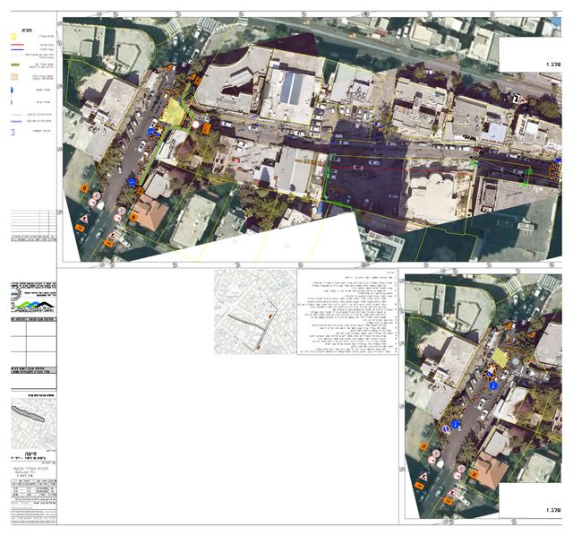
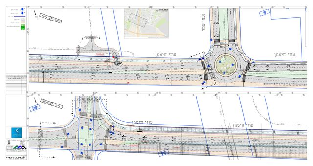
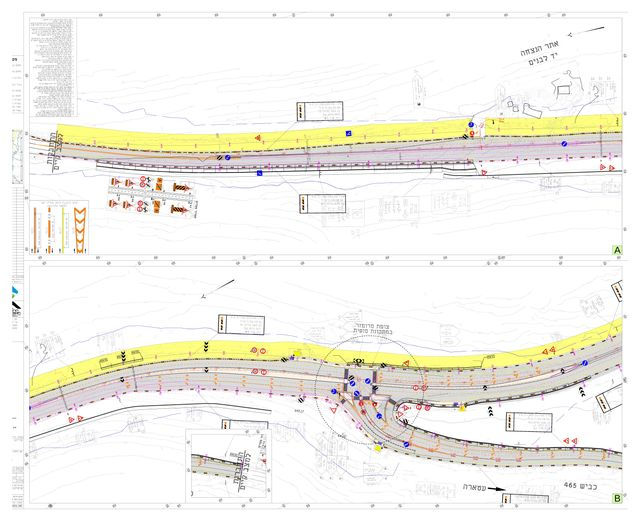
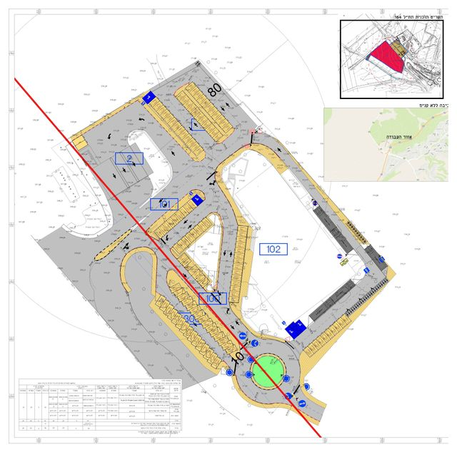
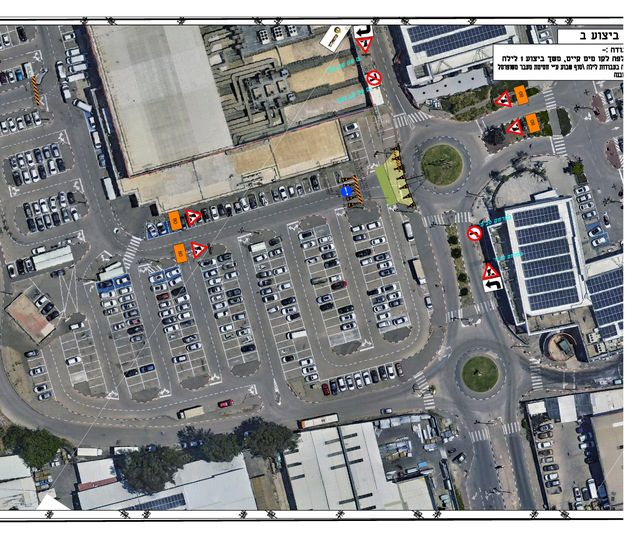
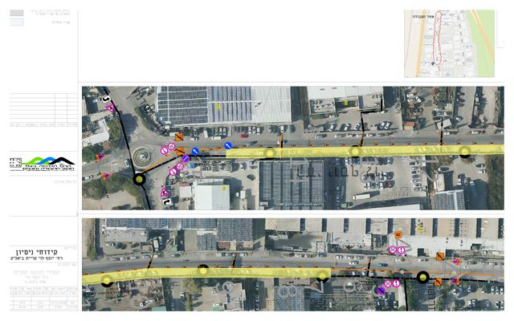
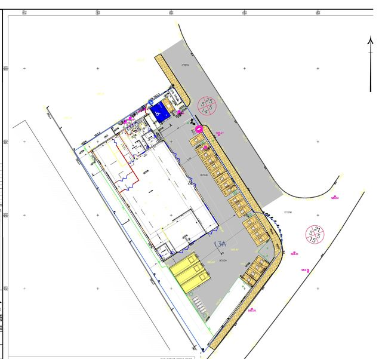
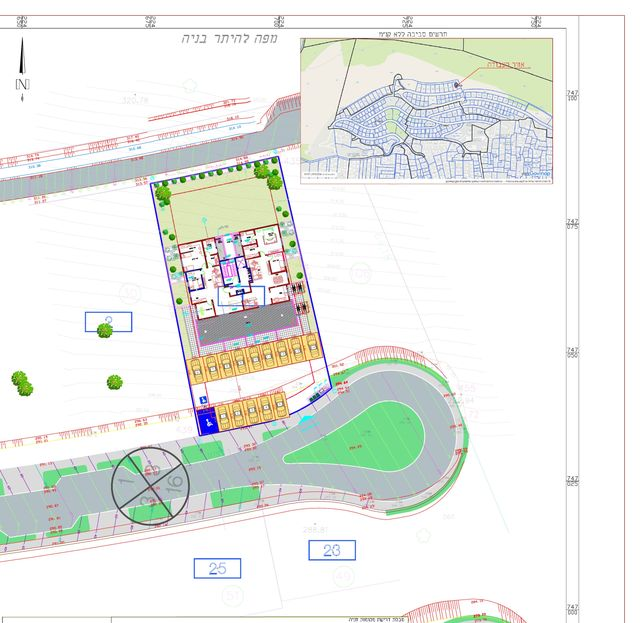
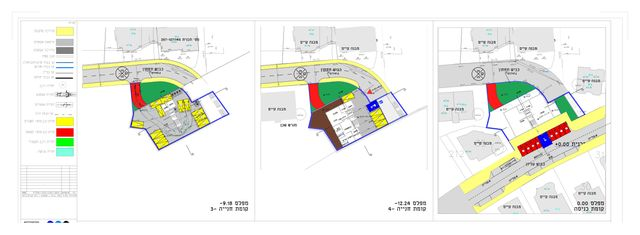
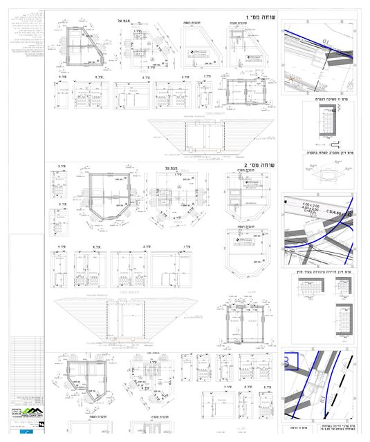
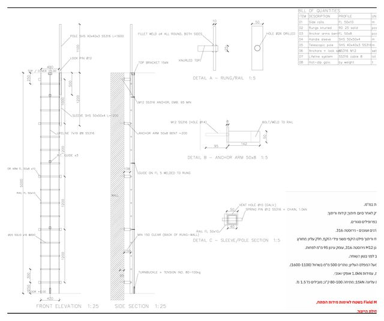
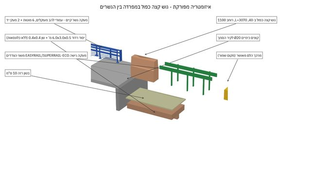
זמינים לכל שאלה ופרויקט
📍 כתובת: אבן סינא 105, טורעאן
📞 טלפון נייד: 052-879-0339
☎️ טלפון במשרד: 054-348-9357
📧 מייל: office@hram.co.il
🕗 שעות פעילות: [שעות פעילות]